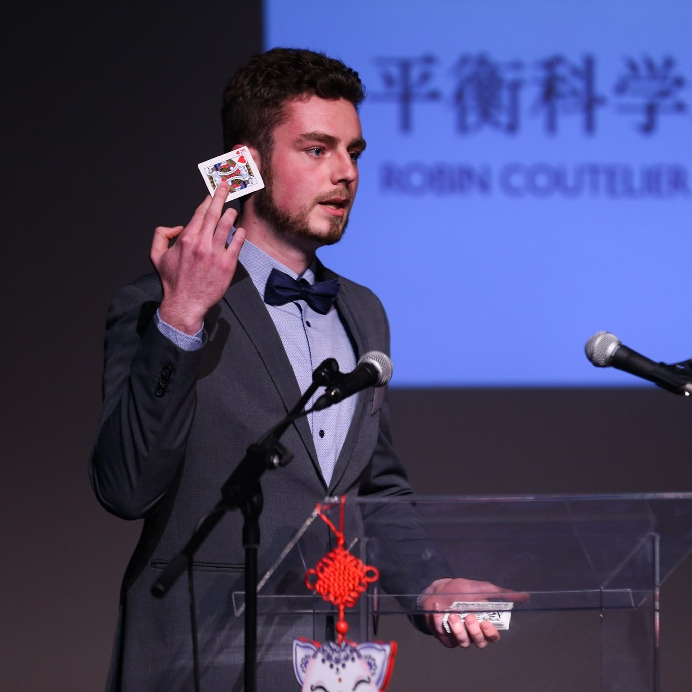
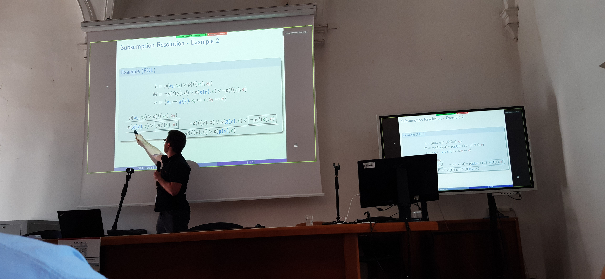
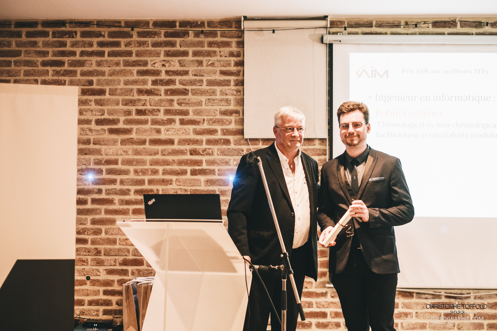
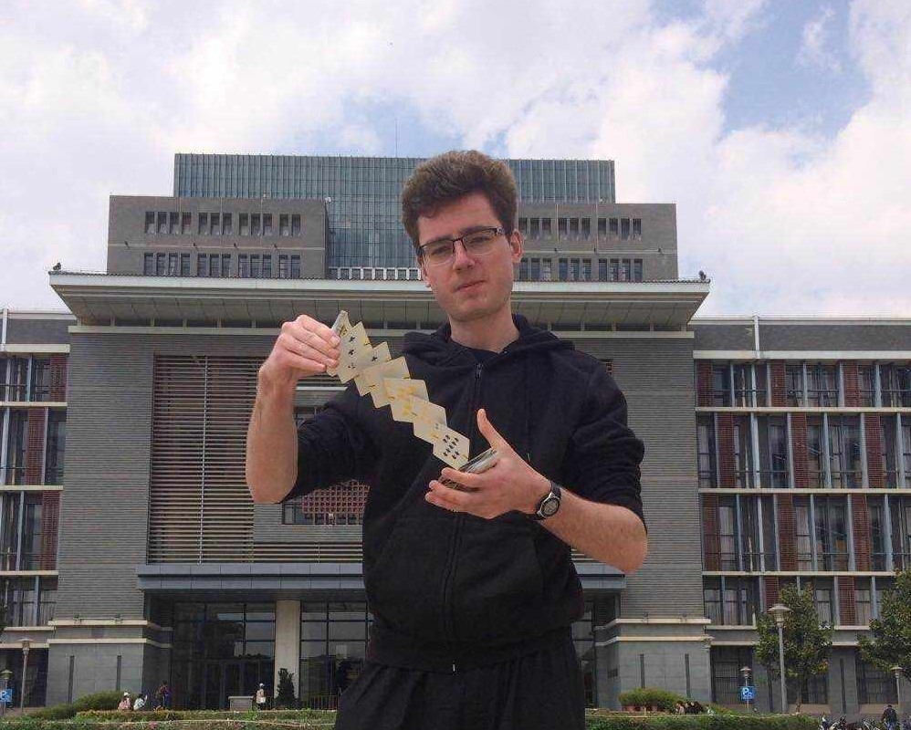

Curriculum Vitae

Intro
I am a Belgian PhD student at the TU Wien in the ForSyte group under the supervision of Pr. Laura Kovács. I graduated Magna Cum Laude in 2023 from the University of Liège in Belgium with a master's degree in computer science and engineering.
Though artificial intelligence and machine learning was a big part of my degree, I particularly enjoy working in formal methods and automated reasoning.
I find beauty in the emergence of complex properties from a simple set of rules. For that reason, I am a big fan of strategy board games such as chess and Go. Computer science, and logic in particular is a perfect example of this phenomenon.
Education
2023 - 2027, PhD in Computer Science, Technical University of Vienna, Austria
Research on efficient data structures and algorithms for automated reasoning.
2021 - 2023, Master in Computer Science and Engineering, University of Liège, Belgium
Professional focus on Intelligent Systems.
Thesis title: "Chronological vs. Non-Chronological Backtracking in SMT solving.
2018 - 2021, Bachelor in Engineering, University of Liège, Belgium
Major in Computer Science and minor in Mechanical Engineering.
2017 - 2018, Chinese language, Yunnan Normal University
I studied the Chinese language in China for a year. I passed HSK4 in 2018.
Languages
- French: Native
- English: Fluent
- Chinese: Intermediate
- German: Beginner
Work
Research

I am currently working on the Vampire automated theorem prover. More specifically, I have worked on a SAT-based procedure for checking subsumption and subsumption resolution in the first-order theorem framework.
The next project in my work will be code trees in Vampire: implementation of just-in-time compilation of parametric functions to improve performance of term indexing.
I am also working on a new SAT solver, called NapSAT, whose design was created to support different backtracking strategies. A paper presenting the ideas is under submission. You can check out my tool on GitHub.
Community Service
Having just started my PhD, I have not yet contributed a lot to the community, but I expect this list to grow in the future. Here are some of the things I have done so far:
- Subreviewer for SCSS 2024
Publications
- 2024. Lazy Reimplication in Chronological Backtracking.
Robin Coutelier, Mathias Fleury and Laura Kovács (Accepted at SAT 2024)
- 2024. SAT Solving for Variants of First-Order Subsumption.
Robin Coutelier, Jakob Rath, Michael Rawson, Armin Biere and Laura Kovács (Accepted at the FMSD journal)
- 2023. Chronological vs. Non-Chronological Backtracking in SMT.
Robin Coutelier, supervised by Pascal Fontaine (download the improved version)
- 2023. SAT-Based Subsumption Resolution.
Robin Coutelier, Jakob Rath, Michael Rawson and Laura Kovács (download)(DUI)
Awards

- 2023. Best master thesis in computer science and engineering at the University of Liège in 2023
- 2023. Best master thesis in computer science and engineering awarded by the AIM and Deuse
- 2023. Woody Bledsoe award for student's submissions at CADE29
- 2021. Finalist in the Belgian BCG strategy cup (more than 600 contestants in teams of 3)
- 2019. 7th place in Europe in the Chinese Bridge international contest for college students
- 2019. 2nd place in the Belgian Chinese Bridge speech contest for college students
- 2018. 2nd place in the Yunnan Normal University Chinese speech contest for college students studying Chinese abroad
- 2016. Was granted a Confucius Institute scholarship for the qualification to the international Chinese Bridge speech contest for high school students
Teaching
Teaching at the TU Wien
Logics and Reasoning for Computer Science
I am a teaching assistant for the course of "Logics and Reasoning for Computer Science" at the TU Wien by Pr. Agata Ciabattoni, Pr. Laura Kovács and Pr. Magdalena Ortiz. Being the team lead for the propositional logic part of the course, I am responsible for the quizzes, exercises and coordinating the final exam for the first part. I also give the first block of exercise sessions.
We use online quizzes for continuous evaluation of the students. As such, and for scalability, I am using a script of my own design to generate hundreds of questions. For obvious reasons, the script is not publicly available, but I am happy to share it with a professor or teaching assistant who would like to use it. Just send me an email.
Teaching at University of Liège
I was a tutor for several classes during my studies, both in English and in French. Here are some of the classes I tutored:
- 2023: Organisation des ordinateurs by Pr. Bernard Boigelot (Fr)
- 2022-2023: Parallel Programming by Pr. Pascal Fontaine
- 2022: Complément d'informatique by Pr. Pierre Geurts (Fr)
- 2021: Heat Transfer by Pr. Pierre Dewallef and Pr. Vincent Terrapon
- 2020: Physique II: Electricité et électromagnétisme by Pr. Hervé Caps (Fr)
Hobbies
Chess

I have been chess enthusiast since I was 3 or 4 years old, and was a member of the Namur Royal Échecs between 2015 and 2023. I am rated about 1800 FIDE and peaked at 2135 in Blitz on chess.com.
I love Chess for its simple set of rules. And yet, some beautiful tactics of almost unlimited complexity emerge on the 64 squares.
Clarinet

I have been playing the clarinet since I was 8. I was a member of the Orchestre Etudiant des Ingénieurs de Liège between 2018 and 2023.
Unfortunately, I do not play in an orchestra since I moved to Vienna. But I will start looking for one as soon as my German is good enough.
Tabletop Role Playing Games
I started playing Dungeons and Dragons 3.5e when I was a teenager. I now mostly play the role of Dungeon Master in the system DnD 5e. I have the pleasure to play weekly with a group of friends.
German
Since I am currently living in Vienna, I am learning German. I am currently at the A2 level.
Magic and Cardistry

Although I do not perform as much as I used to, I still enjoy fidgeting with cards. I practiced a lot during my year in China, since it was a great ice breaker.